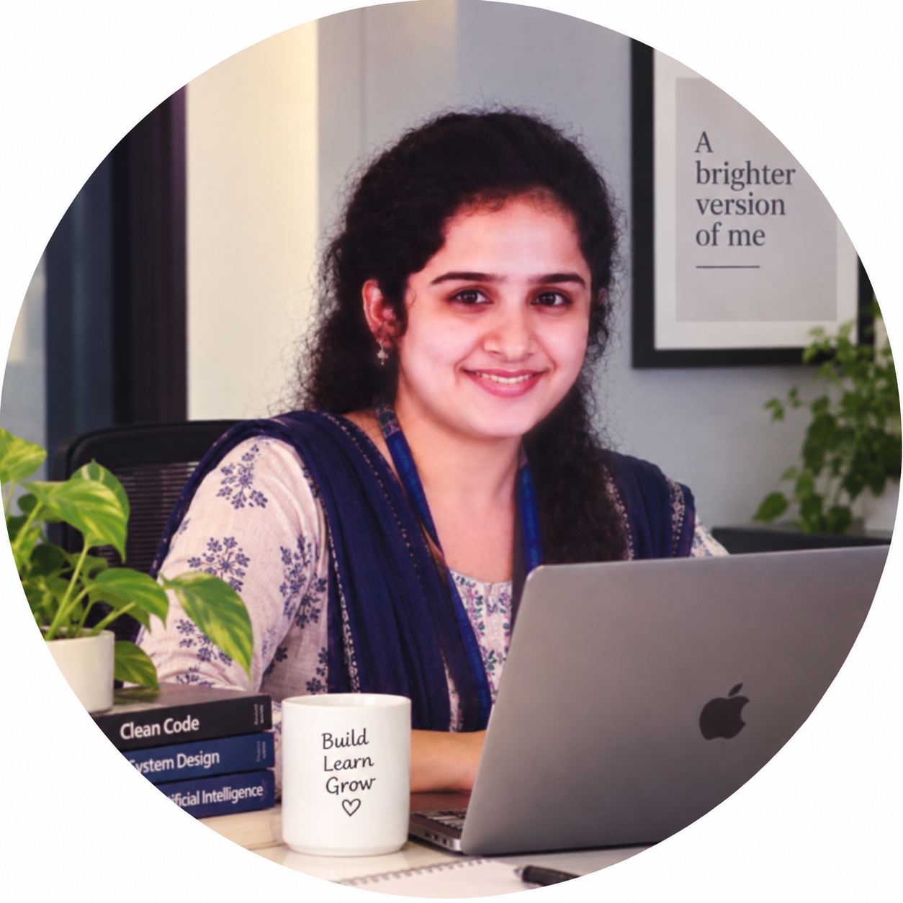
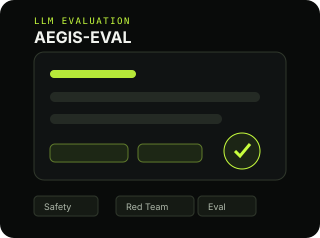
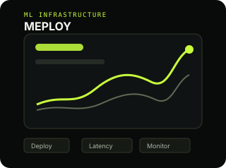
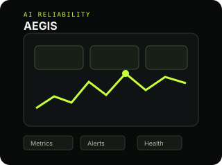
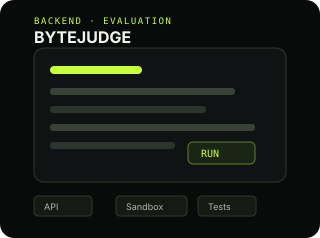
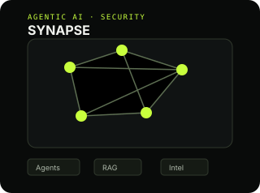

AI Developer OxiQ AI
Built multi-agent company research workflows with LangGraph/LangChain, live web grounding, structured extraction and latency-focused caching.
I'm Sankeerthana Verneni — an engineer focused on backend software, AI/ML systems, LLM applications and the infrastructure that makes them reliable in the real world.

Systems, tools and AI applications built around real engineering problems.

LLM evaluation and red-teaming platform for systematically testing model behavior, safety and reliability.
LLMs · Evaluation · Safety ↗
Real-time ML deployment and monitoring platform built around production serving and observability.
ML · Deployment · Monitoring ↗
Production AI monitoring and reliability platform for observing intelligent systems and operational behavior.
AI Systems · Observability ↗
Online coding evaluation system focused on automated execution and programming-assessment workflows.
Backend · APIs · Evaluation ↗
Multi-agent cyber threat intelligence system combining retrieval, agent workflows and contextual analysis.
Agents · RAG · Security ↗Internships and roles where I've built, learned and shipped.
Built multi-agent company research workflows with LangGraph/LangChain, live web grounding, structured extraction and latency-focused caching.
Build and validate B2B lead datasets, apply industry/geography filters, verify records, remove duplicates and deliver structured CSV data.
Worked on few-shot learning, metric-learning experiments, embedding evaluation and generalization under limited labeled data.
Built a multi-label medical-image classification pipeline, benchmarked CNN backbones and explored graph-based label correlation modeling.
Globally recognized learning and certification milestones across cloud, AI and software.
Notes, breakdowns and ideas on AI systems, engineering and more.
View all writing ↗I'm a software engineer who enjoys building systems, exploring AI, writing about what I learn, and turning ideas into useful software.
I'm open to opportunities, collaborations and interesting engineering problems.